M7 equipment and joint droop optimization
These synthetic three-bus studies demonstrate base-case continuous optimization. They do not establish security-constrained equipment performance, discrete implementability or scalability. All three slices use the same dispatch-deviation objective; losses and setting deviations are separate metrics.
The joint API also accepts encoding=:complementarity to optimize the same continuous tap, simple-bank and bounded droop-parameter variables with CCOpt's exact droop graph. This provides an exact-versus-smoothed droop comparison without changing the equipment relaxation, bounds, or objective. Omitted droop parameter bounds keep those parameters fixed, as in the smooth path. The returned result records both encoding and complementarity_residual_max. Discrete tap positions and switched-shunt selection are not part of this comparison.
A reproducible matched run is provided by examples/m7_ccopt_comparison.jl. It writes each solver's complete design, independent physical residuals, setting differences and objective differences to artifacts/m7_ccopt_comparison.
The dedicated optimize_taps and optimize_shunts APIs accept the same encoding=:complementarity option. Their result records include encoding and complementarity_residual_max, matching joint-design reporting. As with joint design, omit optimizer_factory in exact mode and pass CCOpt settings through optimizer_attributes.
The numerical tables and figures below are generated from retained evidence. Reproduce the solve and plot workflows in Examples, then run python3 examples/build_m7_gallery.py. Input studies, versioned designs, detailed reports and regression logs remain under artifacts/m7_1, artifacts/m7_2 and artifacts/m7_3.
M7.1 — Transformer taps
Fixed-bound and standalone equivalence, a 41-point tap sweep and one/two-free-tap comparisons. Transformer phase shifts, shunts and droops stay fixed.
| Configuration | Objective | Tap 11 | AC residual (pu) | Branch loss (pu) |
|---|---|---|---|---|
| fixed | 2.760045e-05 | 1.02 | 2.431215e-15 | 0.002264238 |
| tap 11 free | 1.994948e-05 | 1.0023 | 2.870759e-13 | 0.002113501 |
| taps 11 and 22 free | 1.993398e-05 | 1.001548 | 5.830753e-14 | 0.002108155 |
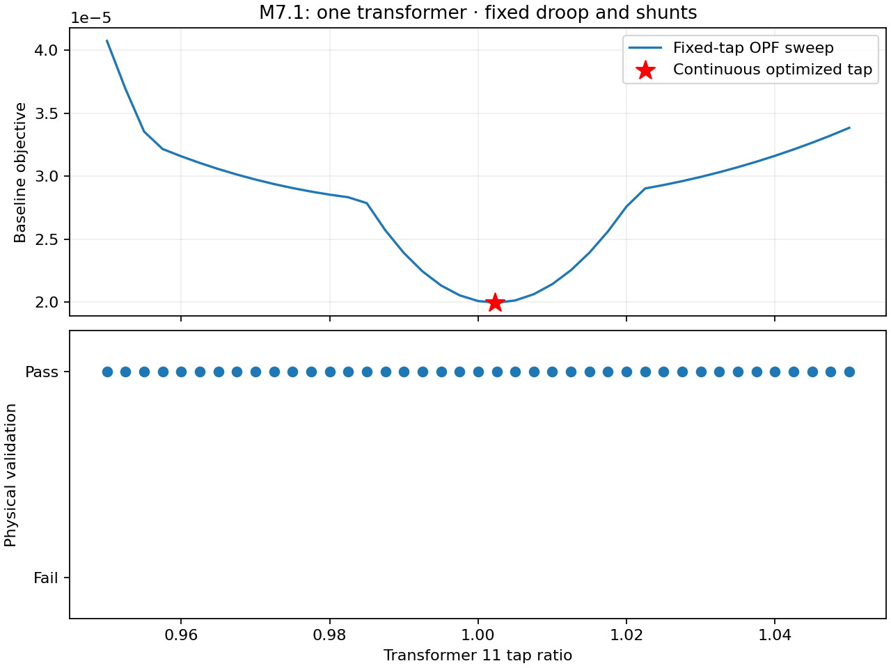
Download tap sweep as PDF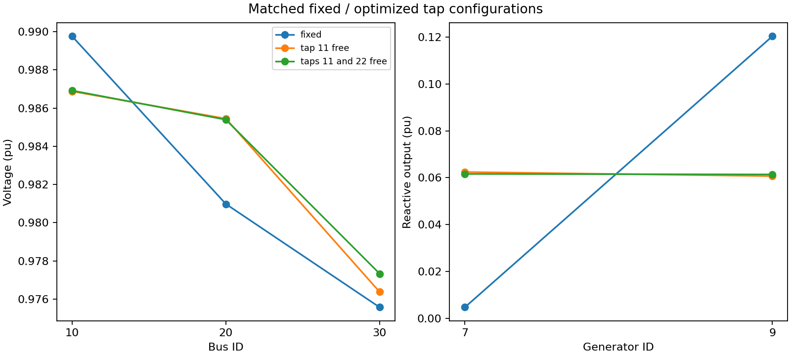
Download operating points as PDF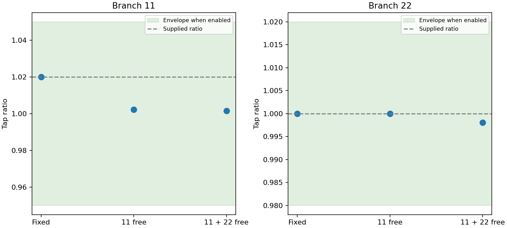
Download tap settings as PDFM7.2 — Simple capacitor/reactor banks
Each bank has one step type. A fractional count scales G and B together. Taps and droops stay fixed. Each capacitor/reactor sweep contains 31 points. Complex-bank optimization is deferred until simple-bank/transformer/droop scaling is demonstrated.
| Equipment | Mode | Objective | AC residual (pu) | Branch loss (pu) | Shunt active consumption (pu) |
|---|---|---|---|---|---|
| capacitor | fixed | 3.165313e-05 | 3.969047e-15 | 0.002262357 | 0.003334059 |
| capacitor | one free | 2.935443e-05 | 2.124758e-09 | 0.002287727 | 0.002377693 |
| capacitor | both free | 2.557165e-05 | 2.245834e-11 | 0.002289527 | 0.001899371 |
| reactor | fixed | 3.726789e-05 | 5.172945e-15 | 0.002329133 | 0.003314389 |
| reactor | one free | 2.935434e-05 | 1.236122e-12 | 0.002287783 | 0.002376528 |
| reactor | both free | 2.557165e-05 | 6.664602e-11 | 0.002289591 | 0.001898015 |
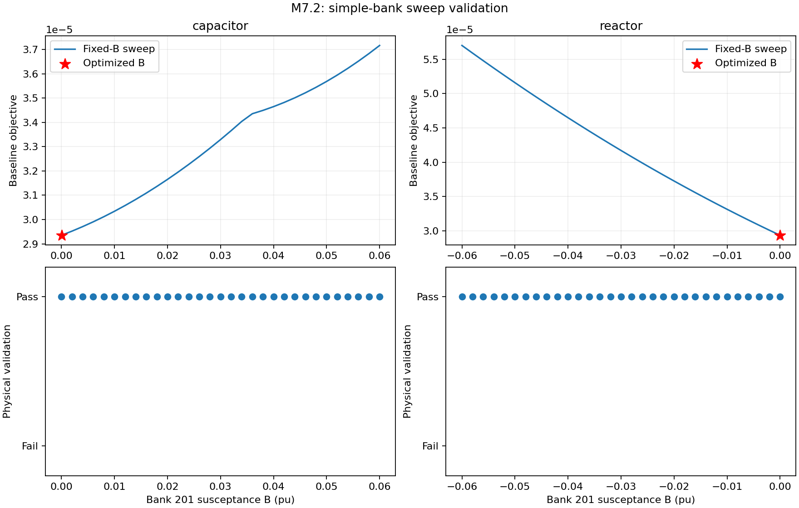
Download susceptance sweep as PDF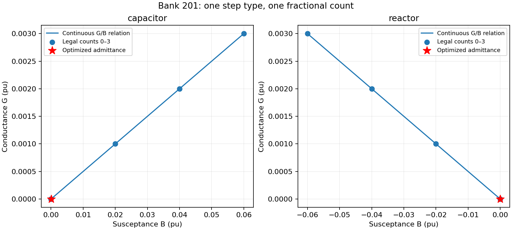
Download bank envelopes as PDF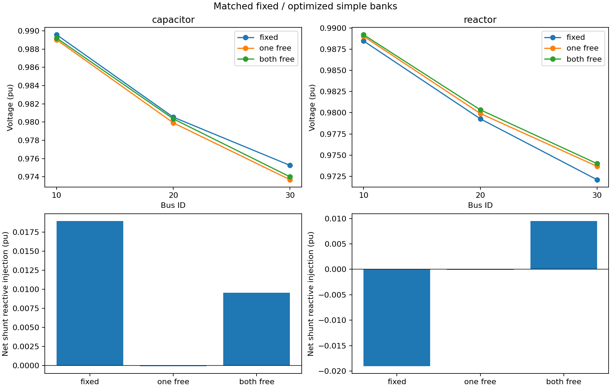
Download operating points as PDF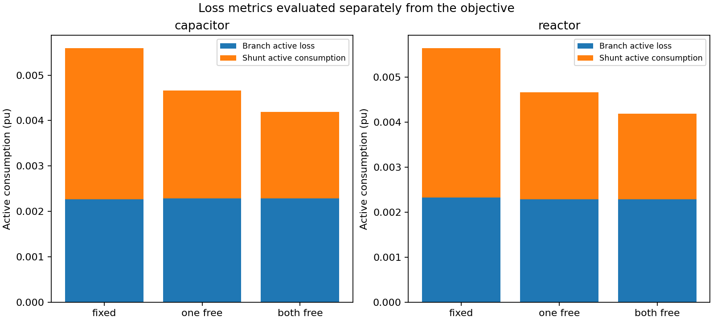
Download active losses as PDFM7.3 — Joint equipment and droop design
Digits denote tap / shunt / droop, with 1 free and 0 fixed. Each configuration has two starts. Tables select the lowest-objective physically valid attempt; the evidence retains every attempt and failure. Tap 11 is bounded to [0.95,1.05], bank 201 B to [0,0.06] pu, and droop 2 slope to [0.04,0.10]. Other parameters are fixed in this grid; separate regression tests exercise reference and asymmetric deadband selection.
| T/S/D | Valid starts | Objective | Tap | B (pu) | Slope | AC residual (pu) |
|---|---|---|---|---|---|---|
| 000 | 2/2 | 3.165313e-05 | 1.02 | 0.02 | 0.075 | 1.915135e-15 |
| 001 | 2/2 | 2.857831e-05 | 1.02 | 0.02 | 0.0999999 | 8.430756e-16 |
| 010 | 2/2 | 2.935435e-05 | 1.02 | 3.024316e-05 | 0.075 | 1.826502e-10 |
| 011 | 2/2 | 2.620771e-05 | 1.02 | 1.061755e-07 | 0.0999999 | 1.034173e-13 |
| 100 | 2/2 | 2.37211e-05 | 1.002058 | 0.02 | 0.075 | 1.460221e-13 |
| 101 | 2/2 | 2.37124e-05 | 1.000147 | 0.02 | 0.05446868 | 1.136674e-12 |
| 110 | 2/2 | 2.183084e-05 | 1.002401 | 4.454692e-05 | 0.075 | 7.189332e-09 |
| 111 | 2/2 | 2.18081e-05 | 0.9993228 | 1.480988e-07 | 0.04644218 | 1.709433e-11 |
| T/S/D | Active objective | Reactive objective | Branch loss | Shunt consumption | Objective spread | Slope spread |
|---|---|---|---|---|---|---|
| 000 | 1.565994e-05 | 1.599318e-05 | 0.002262357 | 0.003334059 | 3.455894e-19 | 0 |
| 001 | 1.557982e-05 | 1.299849e-05 | 0.002256893 | 0.003325188 | 5.23072e-06 | 0.05999455 |
| 010 | 1.088287e-05 | 1.847148e-05 | 0.002287728 | 0.002377647 | 7.98245e-11 | 0 |
| 011 | 1.081902e-05 | 1.538869e-05 | 0.002282338 | 0.002369333 | 1.770052e-10 | 4.499464e-09 |
| 100 | 1.489327e-05 | 8.827828e-06 | 0.002114444 | 0.003343261 | 2.78335e-17 | 0 |
| 101 | 1.490091e-05 | 8.811489e-06 | 0.002110516 | 0.003348588 | 1.378631e-17 | 2.530132e-09 |
| 110 | 1.024779e-05 | 1.158305e-05 | 0.002141423 | 0.002385782 | 6.579897e-11 | 0 |
| 111 | 1.024086e-05 | 1.156724e-05 | 0.002135656 | 0.002390017 | 2.098927e-15 | 2.75197e-07 |
The objective is the sum of the two listed components. Design penalty is zero in every configuration. Loss quantities are in pu. The second-start design values are tap=1, B=0.04 and slope=0.095 for enabled families, with the solved fixed operating state; the first start uses supplied settings and the declared proportional-regime state.
Matched attribution and interactions
Each comparison below changes only droop freedom. Variation across these four benefits measures its dependence on equipment freedom; isolated benefits must not be added without accounting for interactions.
| Equipment freedom held fixed | Objective decrease from freeing droop |
|---|---|
| tap=0 shunt=0 | 3.074821e-06 |
| tap=0 shunt=1 | 3.146635e-06 |
| tap=1 shunt=0 | 8.702212e-09 |
| tap=1 shunt=1 | 2.274399e-08 |
Some starts may reach different valid local solutions. Similar objectives with different settings indicate weak parameter identification on this case. Multi-start evidence is not a global-optimality certificate.
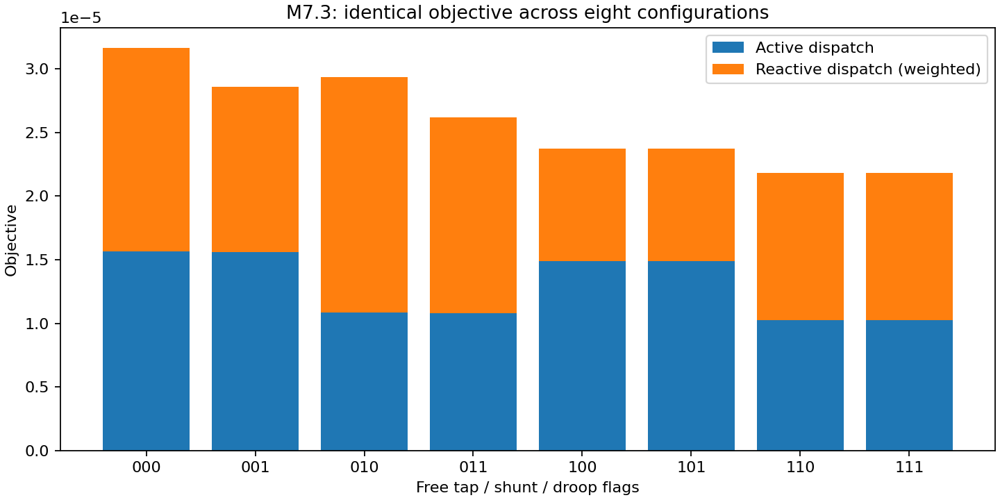
Download objectives as PDF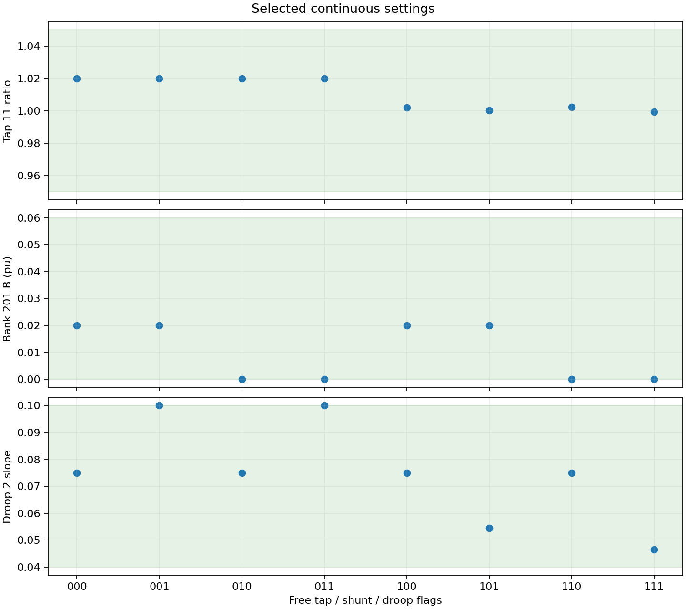
Download settings as PDF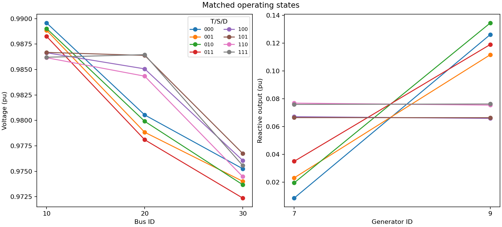
Download operating points as PDF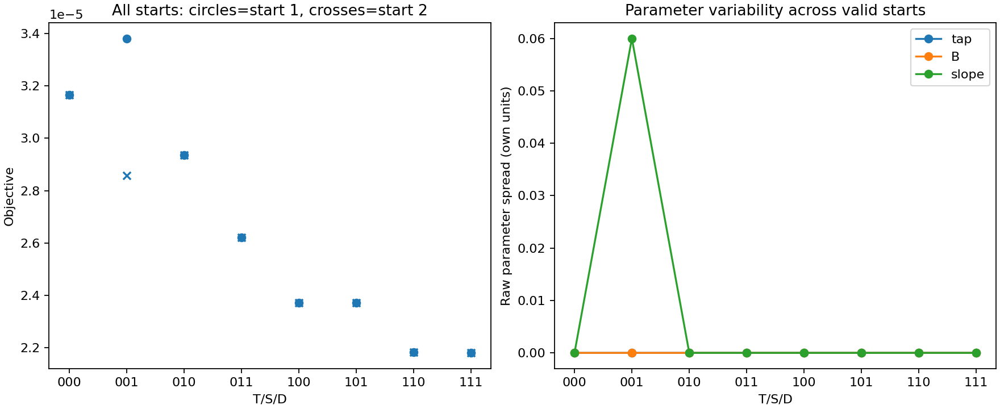
Download multistart as PDF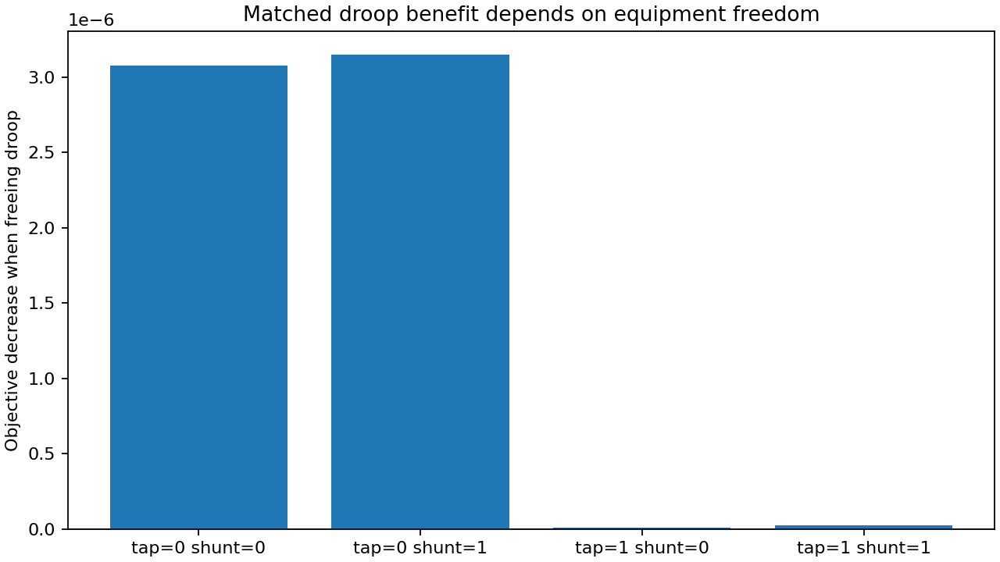
Download matched benefits as PDFAcceptance and next scope
Independent AC and exact-droop tolerances are 1e-6 and 1e-5 pu. Smooth epsilon is 1e-5. Fixed/free comparisons allow objective differences of 1e-8 for numerical equivalence. The full suite checks policy perturbations, physical replay, serialization and Ipopt/MadNLP agreement. M8 adds steady-state transformer AVR; M9 adds coordinated equipment decisions and response policies across contingencies.